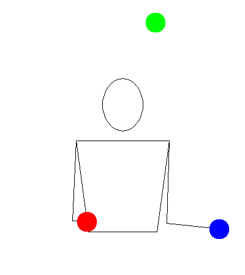
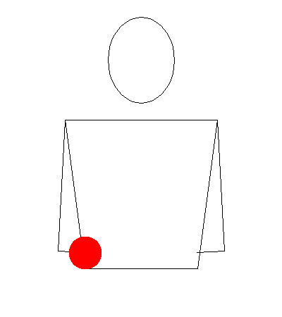
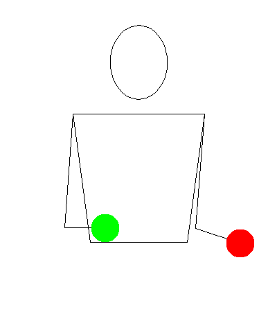

3-Ball Shower

Description
Prerequisites
Tutorial
Step 1

Step 2

Step 3
Tips
- This trick is asymmetrical. You will need to learn this with both your right and left hands.
- At first, the motion feels odd because you trained yourself to avoid it during the cascade. It will take time to overcome the muscle memory and do this properly.
- This trick is quick. It may be helpful to increase your throw height to give yourself more time.